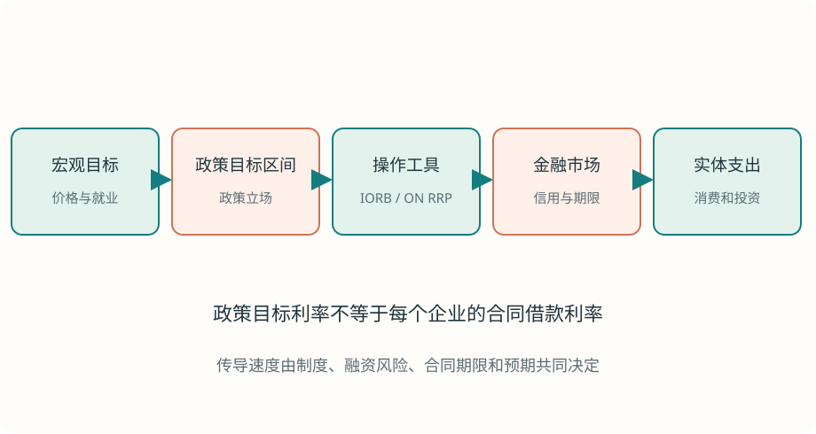
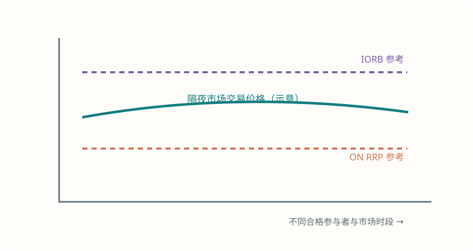
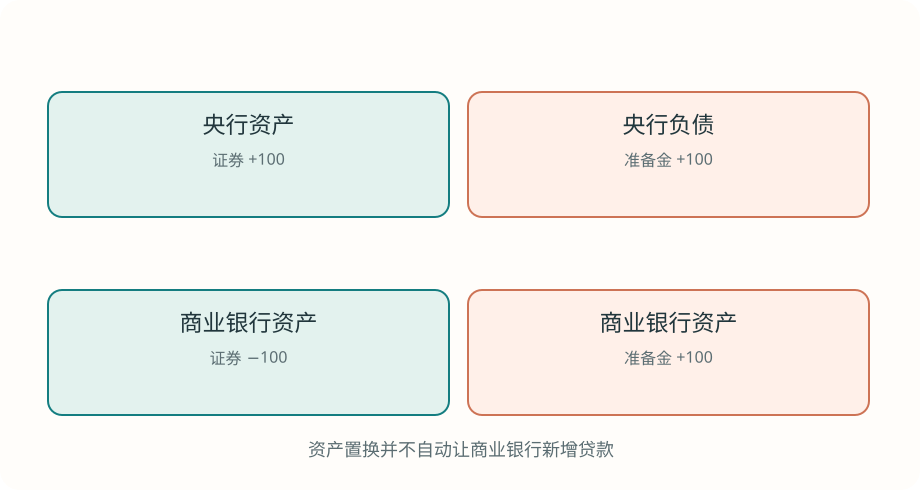
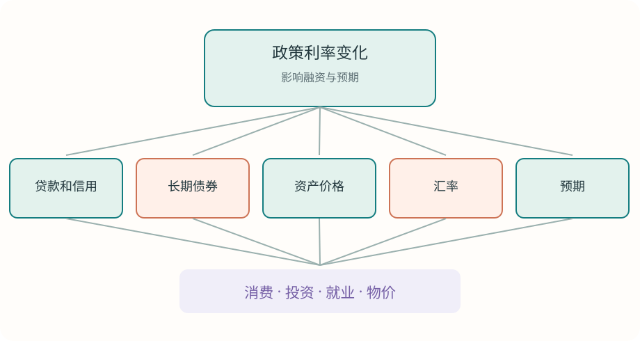

货币政策工具与传导：从操作利率到真实经济
从管理利率和准备金到贷款、消费与投资，货币政策不是一个能让全部利率同步变化的开关。
政策目标、操作利率和借款成本必须分层理解
中央银行关注物价与经济活动等宏观目标，货币政策委员会确定政策立场，再依靠公开市场操作、管理利率和流动性设施实现短期利率控制。以美联储为例，FOMC 设定联邦基金利率目标区间，而银行贷款利率还需叠加信用利差、期限、资金结构与合同重定价条件。因此听到「央行降息」时，先辨别降的是哪一个利率，再分析谁的融资成本受到影响。

为什么管理利率不等于每笔市场交易价格？
理想化的走廊图将贷款便利形成的上方参考与存款便利形成的下方参考用于解释市场套利；实际利率还受到市场准入、信用、资产负债表成本与抵押品差异影响。在美国充裕准备金框架中，合格机构的 IORB 利率对其持有准备金的机会成本具有重要影响，ON RRP 则为一组特定对手方提供隔夜投资选择；不能假设所有投资者都能以同样的条件使用这些设施。

此外，美国的具体政策实施方式不可直接替代中国等其他经济体的操作机制。观察制度需标明时间、货币体系与工具名称，而不是把公开市场操作、法定准备金和贷款市场报价利率当成一个通用按钮。
QE 买债券时是谁的资产负债表发生了改变？
假设央行直接从商业银行购买价值100的证券并以准备金支付。央行资产端「证券+100」、负债端「准备金+100」；出售证券的商业银行资产端「证券−100、准备金+100」。商业银行资产组合变化，但这笔交易本身没有直接产生新的客户贷款。

如果证券由非银行养老金等机构持有，结算可能通过商业银行完成：结算银行得到准备金，非银行卖方获得银行存款债权。不同卖方带来的存款变化不同；央行创造准备金不能机械推出固定货币乘数，更不能断言「购债100必然新增贷款1000」。英格兰银行对 QE 的原理说明可用于追踪交易对象。
缩表 QT 不等于逐单位直接收回商业贷款
量化紧缩通常是央行降低资产持有规模，例如允许证券到期后不全部再投资或进行资产出售。但央行负债端可能同时包括银行准备金、财政部门账户、隔夜逆回购余额和流通中现金。具体哪个项目吸收调整，取决于金融市场结算与其他资金流。即便央行资产下降100，也不能不看负债端变化就断言银行准备金必然下降100，更不能据此机械预言商业贷款收缩100。
| 交易或政策 | 直接会计或操作影响 | 不能直接推出 |
|---|---|---|
| 央行购买证券 QE | 央行证券资产扩大，支付产生准备金 | 银行贷款按某个倍数增长 |
| 央行降低证券持有 QT | 央行资产规模缩小，结算与负债结构调整 | 每单位缩表都使存款等额减少 |
| 提高 IORB 等管理利率 | 影响合格机构的资金机会成本 | 所有家庭贷款立刻完全重定价 |
| 银行风险偏好下降 | 授信标准可能收紧 | 央行只需额外创造准备金就能完全抵消 |
政策利率变化为什么要经过信用利差才能传到企业？
政策影响短期无风险利率，再通过期限结构、银行融资、信用溢价、资产价格、汇率与未来预期影响真实决策。例如政策短端利率提高1个百分点，但某类浮动贷款只传递其中70%，则该贷款的政策相关成本项提高0.7个百分点；若同时信用利差上升，企业最终借款成本可能增加更多。固定利率借款、存量合同以及不同行业的风险状况会使传导差异进一步扩大。

观察政策冲击与实际贷款成本的分离
构造贷款利率=基准政策利率+信用利差+传导比例×政策变化；线性信贷需求Q=max(0,120−10×贷款利率)，非经验估计。
不要把宽货币当作宽信用，也不要忽视时滞
银行能否贷款还要考虑资本金、资产质量、监管要求、流动性、借款人现金流与需求。市场准备金更多可能有利于交易结算或资金市场稳定，但不能自动消除净资产不足或贷款项目无盈利前景的问题。同样，政策公告、金融资产定价、银行合同重定价、消费和就业响应可能相隔不同的时间段，通胀与实际产出的变化也不是同步按钮。
来源与进一步阅读
所列资料用于核对经济机制及政策制度；图中的金额与参数是构造教学数值，不代表真实经济或最新金融指标。
- 纽约联储 — 货币政策具体实施机制 · ample reserves tools
- 美联储 — IORB 常见问题 · operating rate
- 美联储 — 货币政策与真实经济传导 · transmission
- 英格兰银行 — QE 资产购买 · central bank reserves